of Georgia Power's new 10,000 MW serves data centers, in a $16.3B build regulators approved.
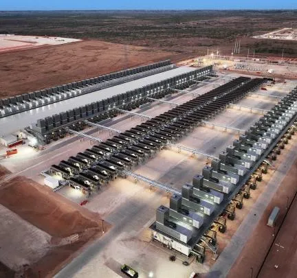
The forecast for your internet.
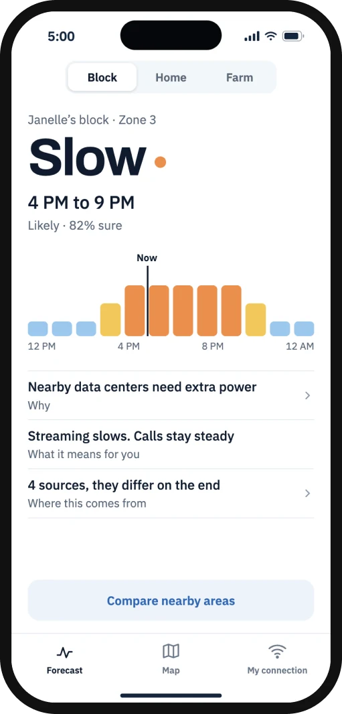
01 · Overview
In 2050, AI demand has outgrown the power grid and cities ration the internet at peak hours. Someone sets the threshold, draws the zones and decides who goes first. Conditions borrows the language of weather to make those decisions visible, so people can plan around them and push back on them.
02 · The world
Built from real trends, so it reads less like science fiction and more like next decade's news.
Cities ration connectivity the way they ration water in a drought.
of Georgia Power's new 10,000 MW serves data centers, in a $16.3B build regulators approved.

The speed Verizon left Santa Clara County Fire during the 2018 Mendocino Complex fire.
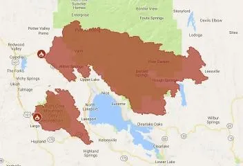
Federal orders that let grid operators move data centers to backup power when supply runs short.
Sources: AP News, CBS News, Ars Technica, U.S. Department of Energy. Full list at the end.
03 · The problem
Today you find out about a rule only when it affects you, and there is nothing to answer. Conditions moves the moment of knowing earlier and adds a way to respond.
A level and a time window. No reason, and no one to ask.
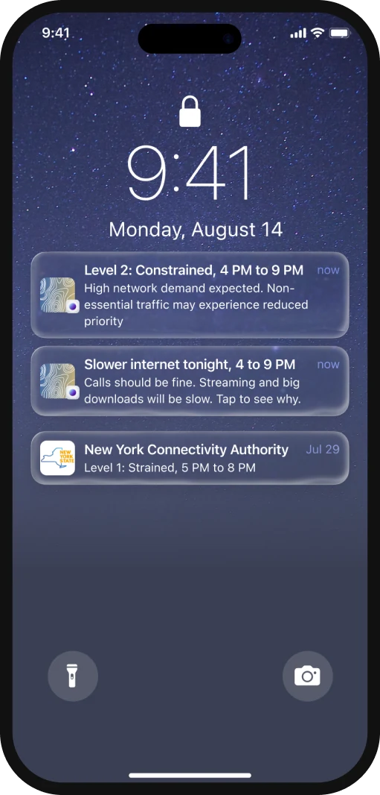
04 · People
Three people, three saved places in the app. Each one needs a different answer from the same forecast.
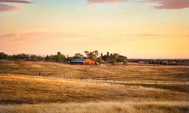
Farm · BusyHer farm runs on one unreliable line for equipment, payments and deliveries, with fewer fallbacks than city users.
Needs to see where and when coverage fails.
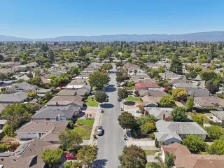
Home · ClearOne connection carries work calls, homework, streaming and a dozen smart devices. Slowdowns become a competition at home.
Needs to know what's using it and plan around busy hours.
Her block mixes homes, small businesses, public Wi-Fi and four community groups. She asks if her area is treated differently.
Needs to compare areas and challenge unfair rules.
05 · Research
Weather apps already know how to deliver bad news calmly. Network tools know how to show depth. The audit kept the best of each.
| App | Take | Leave |
|---|---|---|
| Watch Duty | Calm urgency; every update has a source and a time | Overlapping map icons |
| The Weather Channel | Decision-first cards and plain-language alerts | Too many competing modules |
| NOAA Live Radar | The map as hero, a few layers, floating controls | Small icon-only controls |
| Weather Underground | Neighbors' stations as a trusted source | Dense graphs, no summary |
| IP Tools, System Status | Depth for people who want it | Jargon and no clear verdict |
Each screen leads with one word and one window: Slow, 4 to 9 PM.
A state color always comes with its name, so nobody has to decode it.
Every forecast says who made it, and says so when sources disagree.
"Area over 90% busy," not "zone load threshold." No jargon.
Tap a zone and a card explains it in one sentence.
Serious without alarm. Red means Very slow and appears rarely.
06 · Visual system
Four levels named with words people already use. The bars grow like the forecast chart in the app, because they are the forecast chart in the app.
#9CC8EE#F2C85B#EC8F4D#B23F36Levels were renamed from Strained, Constrained and Severe, which were hard to tell apart.
Sturdy, like signage on public infrastructure. One face to announce.
Body text, labels, times and numbers in weights 300 to 700. Clear digits, a calm civic tone. One face to explain.
07 · The app
White page, one verdict, one visual, a hairline list and one blue button. Color lives only in the dots and bars, so it always means something. Tap any phone to flip it.
The word and the window come first. Everything else is a tap away, in the order people ask: why, what it means for me, and where this came from.
Zones follow real shorelines instead of blocks, so it reads as a place, not a diagram. Short Z1 to Z6 chips keep the map clear; the legend does the explaining.
Where is it slow?
The city, your internet provider, neighbors and data-center power use, side by side on one timeline. When neighbors measure something different, the screen says so in their purple.
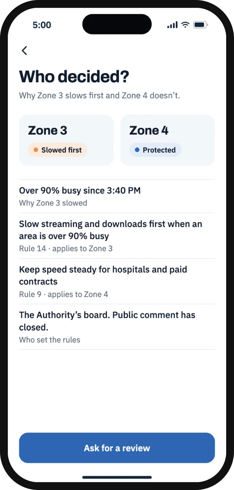
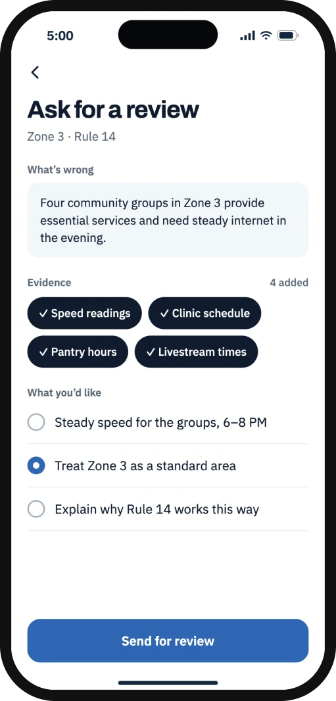
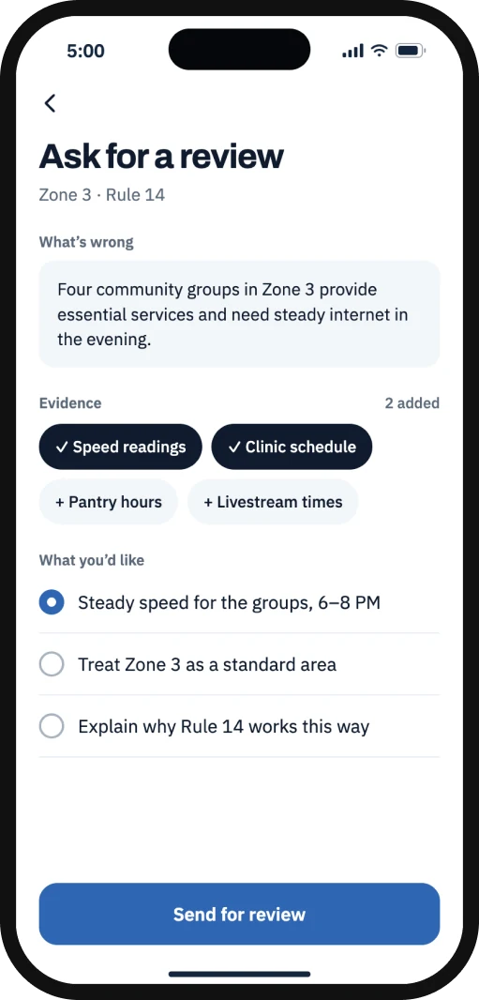
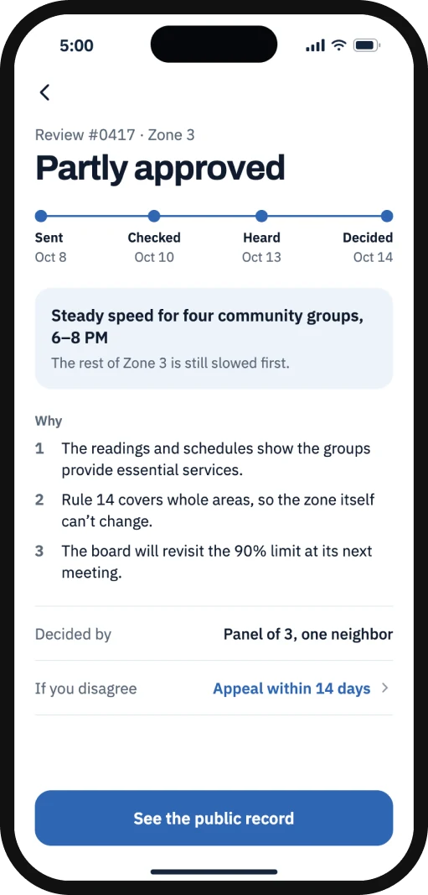
What's using my share?
Marcus sees what's using his share and pauses what can wait.
Every rule, kept in one place
It shows where slowdowns land, not why.
Neighbors measure too
Speed only, never browsing, shared beside the official forecast.
An hour for the clinic
Neighbors pause what can wait so the clinic and pantry stay fast.
The forecast on a shelf
A light strip on the router shows the day at a glance, so the forecast reaches people who never open the app.
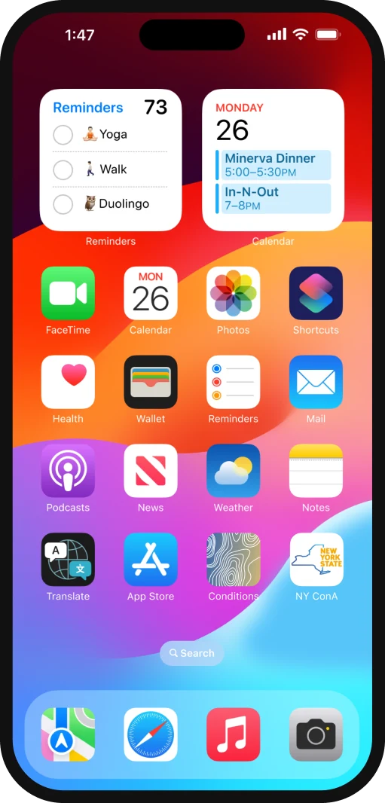
08 · Iteration
The first pass had cards inside cards, caps labels and three kinds of emphasis per screen. The redesign keeps every feature and removes the noise, taking cues from Robinhood, Ramp and Stripe.
Forecast: one word, one window, one chart.
Map: full-bleed, controls float, the card shrinks to a sheet.
Sources: a timeline and a list, no boxes.
My connection: one number, then the devices.
Who decided?: two columns become two rows.
Make your case: four plain steps and one button.
| Busy, Slow, Very slow replace Strained, Constrained, Severe | Two near-synonyms were hard to tell apart |
| Calmer, plain-language copy on every screen | Written for people new to broadband terms |
| Zones drawn over a real map, following shorelines | Blocks read as a diagram, not a place |
| Short Z1 to Z6 chips, colors explained by a legend | Long labels crowded the map |
| One hero, hairline lists, one blue button per screen | The first pass felt busy; now color only carries meaning |
09 · Campaign
The launch borrows the places weather already lives: the evening sky, the side of a building, a phone checked on the way out. Turn the sound on for the spots.
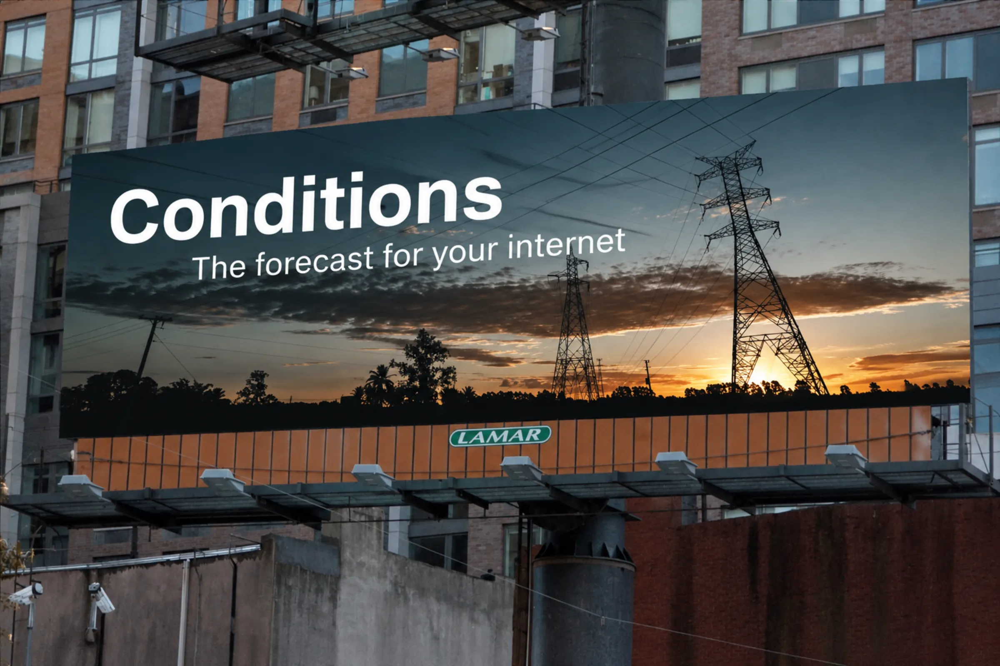
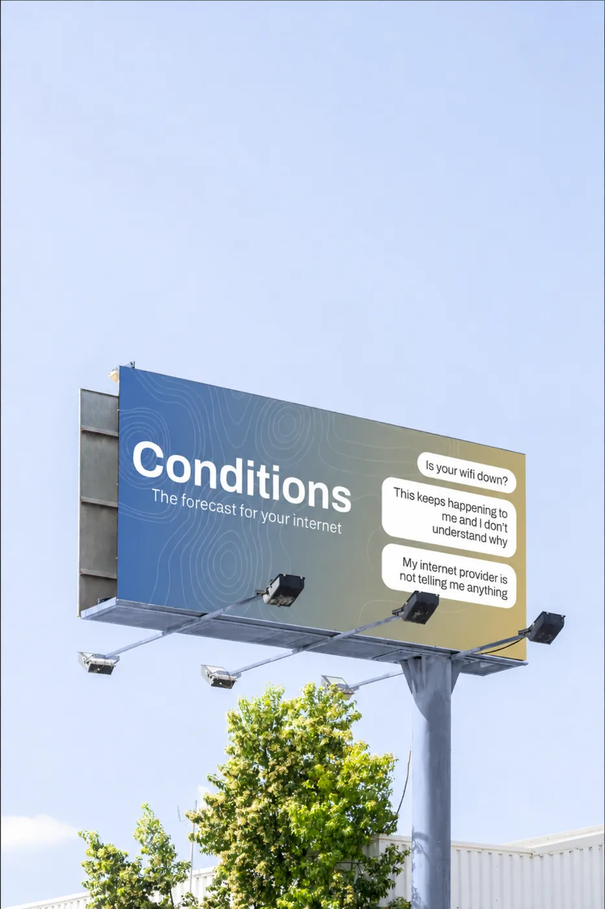
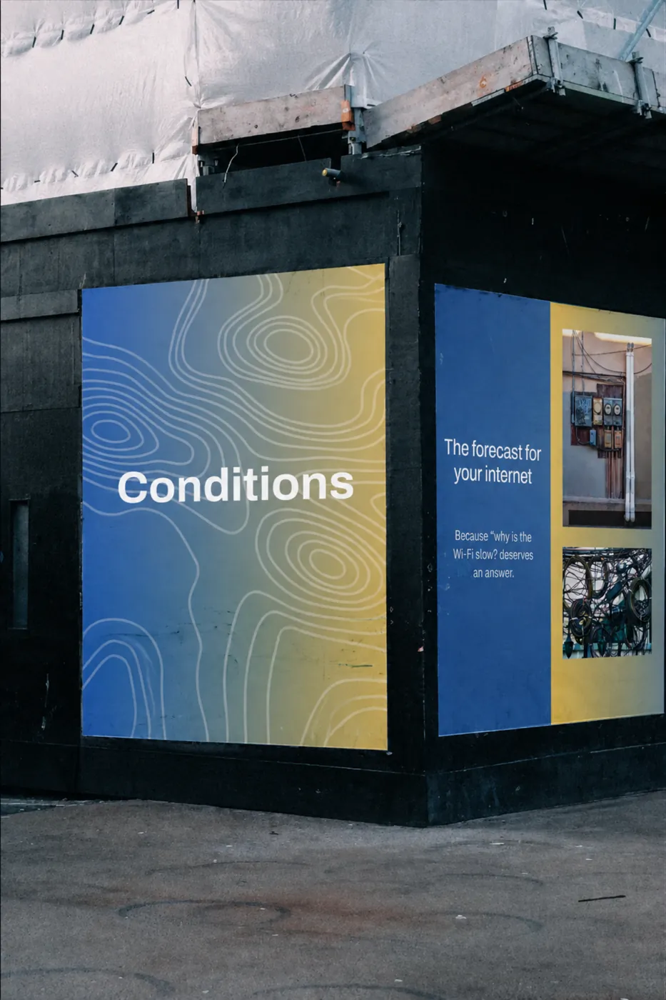
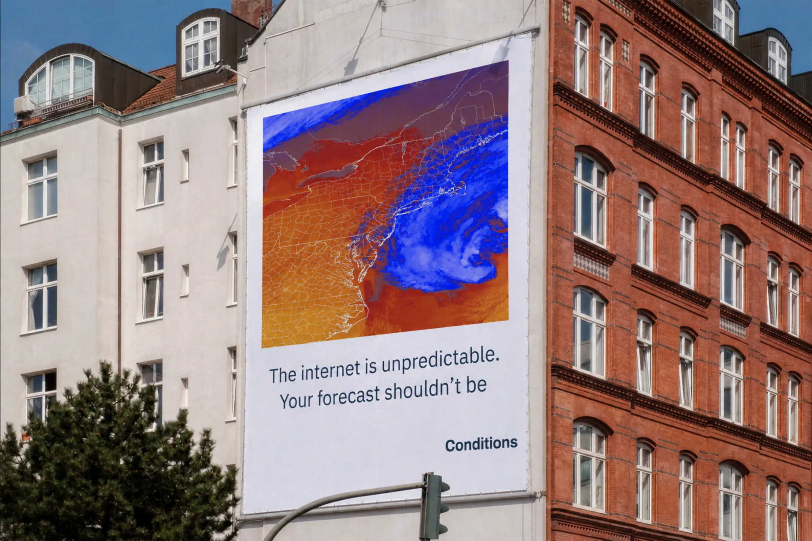
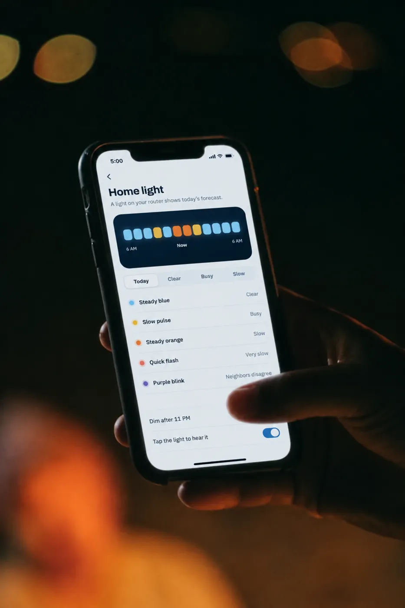
10 · What's next
Rebuild the 12 screens and 17 variations as components.
Swap the New York placeholder map and redraw the zones to fit.
Walk three people like Amara, Marcus and Janelle through one slow evening.
Open question: who runs Conditions, and how does it stay independent from the Authority it explains?